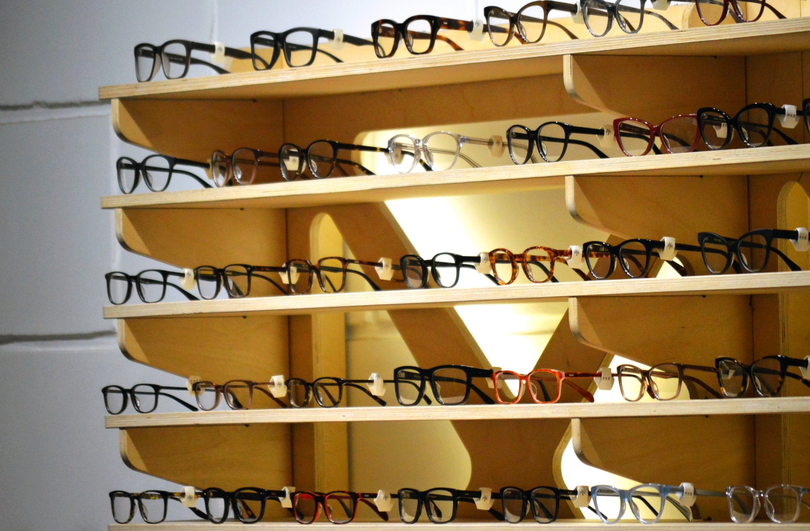
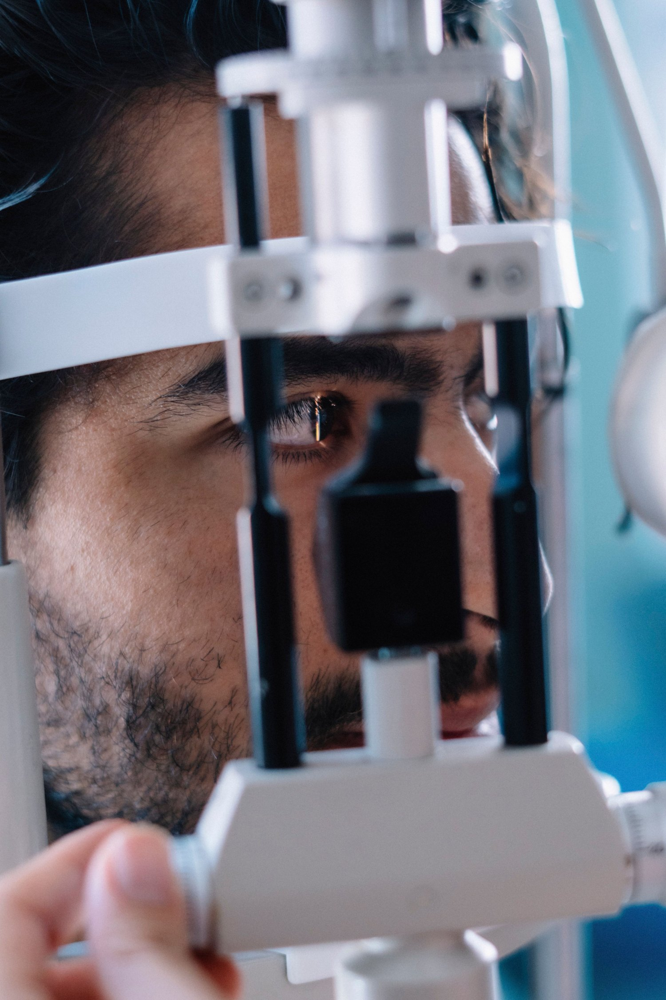
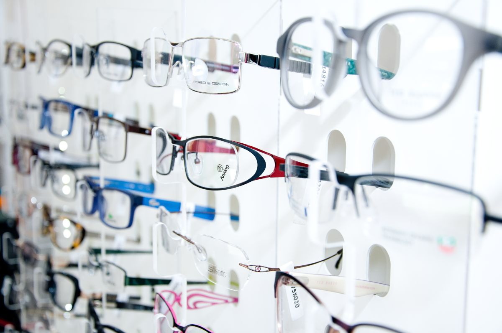
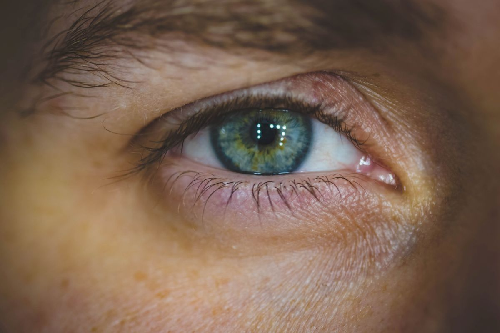
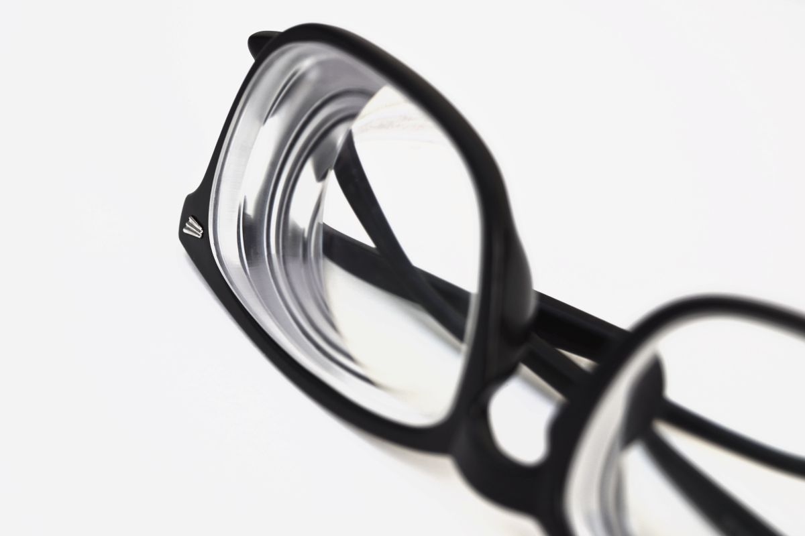
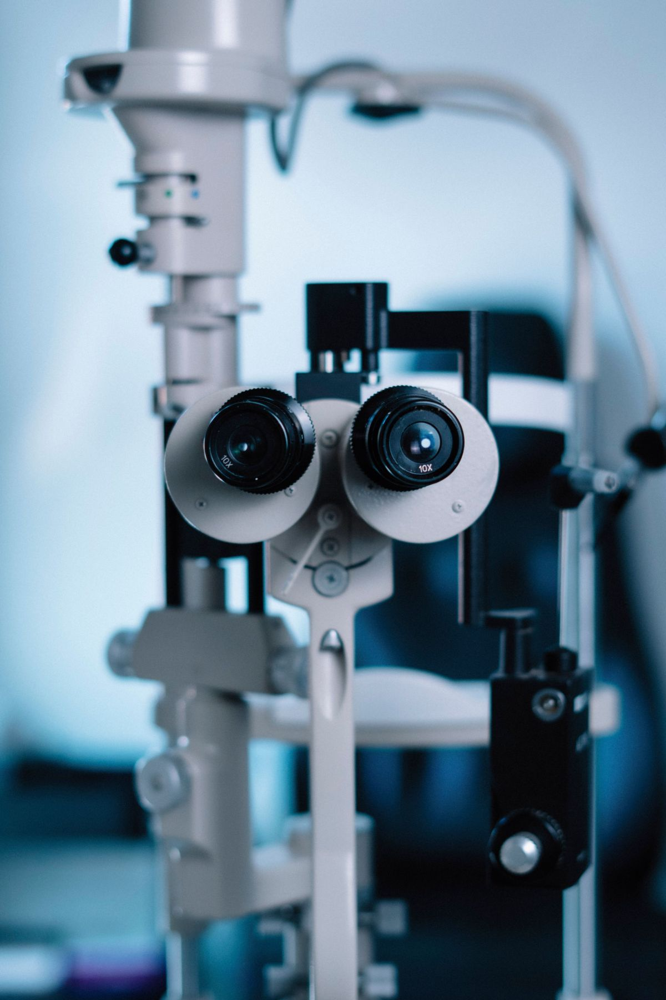
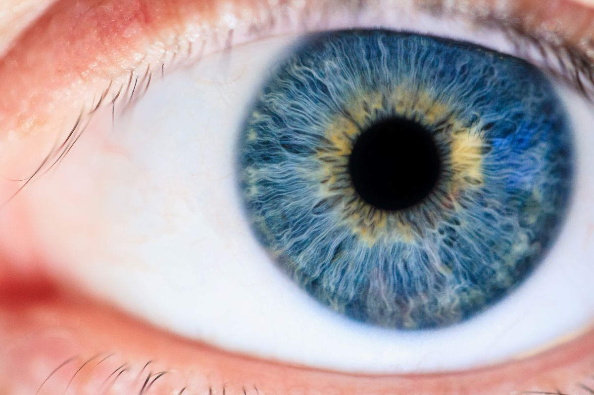

Villarrica · Región de La Araucanía
Trae su receta y no entiende nada de lo que dice.
Óptica en Villarrica. Acá está, línea por línea, qué significa ese papel — antes de que venga.
01 — El papel que todos tienen y nadie entiende
Qué dice su receta.
Una receta de lentes tiene dos filas y cuatro o cinco columnas, y está escrita en un código que nadie le explica. No sirve para autorecetarse —eso lo hace el profesional— pero sí para entender qué le pasa a sus ojos y qué está comprando.
| Ojo | ESF | CIL | EJE | ADD |
|---|---|---|---|---|
| OD ojo derecho | −1,25 | −0,50 | 180° | +2,00 |
| OI ojo izquierdo | −1,00 | −0,75 | 90° | +2,00 |
Los números de arriba son un ejemplo inventado para mostrar la forma de la tabla. Los suyos están en su receta y no se parecen necesariamente a estos.
- OD y OI
- Ojo derecho y ojo izquierdo. Casi nunca son iguales, y eso es completamente normal. En latín aparecen como oculus dexter y oculus sinister.
- ESF — esfera
- Cuánta corrección necesita. Si el número lleva signo menos, es miopía: se ve mal de lejos. Si lleva más, es hipermetropía: cuesta de cerca. Mientras más alto el número, más corrección.
- CIL — cilindro
- El astigmatismo. Aparece cuando la córnea no es del todo redonda, y hace que se vea algo borroso o estirado a cualquier distancia. Si esta casilla está vacía, usted no tiene.
- EJE
- Va de 0 a 180 grados y sólo tiene sentido si hay cilindro: dice en qué orientación está ese astigmatismo. No es una medida de cuánto, sino de dónde.
- ADD — adición
- La corrección extra para ver de cerca. Aparece a partir de cierta edad, cuando el ojo pierde la capacidad de enfocar en corto. Es lo que convierte unos lentes en bifocales o multifocales.
- DP — distancia pupilar
- La distancia entre las pupilas, en milímetros. No siempre viene en la receta y es imprescindible para armar los lentes: si está mal, el centro óptico queda corrido y los lentes cansan aunque la graduación sea correcta.
Esto es orientación general para entender un documento, no una indicación clínica ni un diagnóstico. La receta la emite un oftalmólogo u optometrista después de examinarlo, y ningún dato de esta página reemplaza ese examen. Si su receta tiene más de un año, lo que corresponde es volver a controlarse antes de encargar lentes.

Quince reseñas.
Las quince con cinco.
02 — Señales de que toca revisarse
No es sólo «veo borroso».
La vista baja de a poco y el cerebro compensa, así que uno se acostumbra sin notarlo. Estas son las señales que la gente atribuye a otra cosa:
- Dolor de cabeza al final del día, sobre todo si trabaja con pantalla o leyendo.
- Alejar el teléfono para leer un mensaje. Es la señal más típica de que llegó la adición.
- Guiñar un ojo para enfocar algo de lejos, sin darse cuenta.
- Los focos de los autos se ven con halos al manejar de noche.
- Le cuesta más leer con poca luz que antes.
- Sus lentes actuales tienen más de dos años y nunca los volvió a controlar.
Ninguna de estas señales es un diagnóstico: pueden tener otras causas. Lo que corresponde con cualquiera de ellas es pedir un examen, no comprar lentes.
Lo que decide si los lentes sirven
La medida, no la montura.

03 — Antes de venir
Tres cosas que ahorran una vuelta.
- La receta, aunque sea vieja: sirve para comparar cómo cambió su vista.
- Los lentes que usa hoy, aunque estén malos. De ahí se puede leer la graduación anterior.
- Su previsión, si va a usarla.
Si no tiene receta o la tiene vencida, lo primero es el examen: encargar lentes con una medida antigua es tirar la plata dos veces.
04 — La óptica
Marcos, medidas y tiempo para elegir.





05 — Contacto
Pedir hora.
- Dónde
- Villarrica, Región de La Araucanía
- Dirección exacta
- falta — no está publicada
- Horario
- falta — hay que confirmarlo
- Previsiones y convenios
- falta — hay que confirmarlos
- Plazo de entrega
- falta — cuánto demoran los lentes